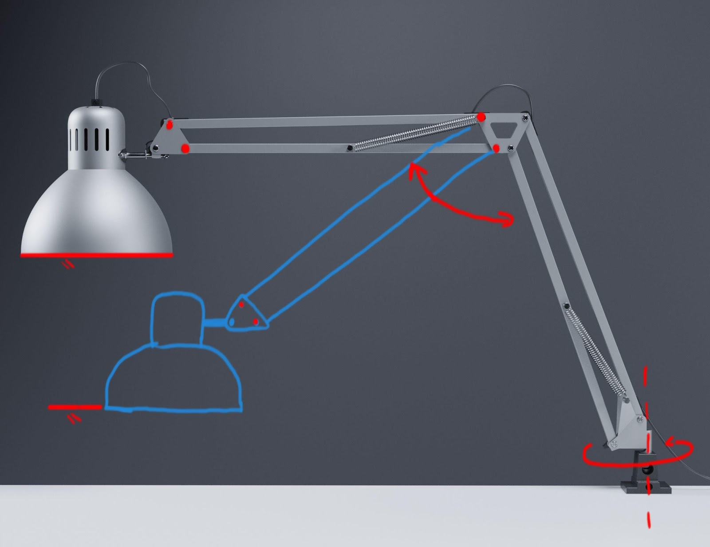

Fimmtudagur
Hugmyndin þróuð
Við byrjuðum á því að hugsa hvernig armurinn átti að virka. Hann þurfti að vera léttur þar sem mótorarnir sem við fengum voru með lítið vægi. Eftir dálitla stund datt okkur í hug að nota gamlan ikea lampa sem grunnur að arminum okkar. Hann er léttur auk þess sem gormar eru festir á hann til þess að minnka vægið.
Við ákváðum að láta hann snúa sér til þess að grípa glasið og síðan færa það áfram og upp í einni hreyfingu og loks snúa gripklónni til þess að gefa sopa. Við ákváðum einnig að hafa neðri arm lampans læstann. Einn helsti kosturinn við að nota lampann var sá að hann notar tvo samsíða jafnlanga arma sem gerir það að verkum að hausinn á lampanum snýst ekki þegar armar eru hreyfðir. Það er mjög hentugt þegar lyfta þarf glasi. Næst fórum við að leita aðferða til þess að flytja vægið frá mótornum yfir í lampann til þess að hann gæti lyft arminum. Við sáum að við þyrftum að gíra töluvert niður til þess að mótorinn réði við arminn með vínglasi framan á. Við höfðum aðgengi að gömlum prentara sem var fullur af alls konar tannhjólum, og í honum fundum við tvö tannhjól sem höfðu gírhlutfallið 15:1, sem þýðir að minna tannhjólið þarf að fara 15 hringi fyrir einn hring á því stóra og vægið verður þar af leiðandi 15x minna. Við ákváðum að nota þau þar sem við reiknuðum út að það myndi veita nóg vægi til þess að færa arminn m.v. 50 cm vægisarm og um 200g hlut.
Síðan fundum önnur tannhjól úr prentaranum sem við ákváðum að nota fyrir snúninginn á lampanum.